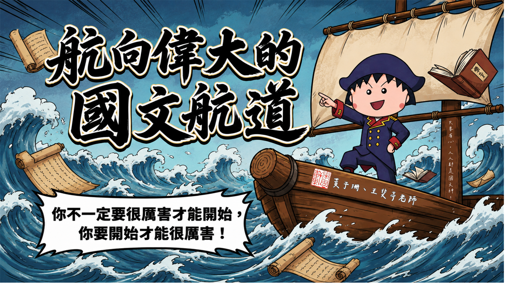

學思軒・語文教學資源網站
會考國文練習神器大寶庫
訪
訪客模式 (未登入) ▾
點此登入身分
整合【語文補給站】、【語文學習集】與【橘子形音義】三大教材系列，
涵蓋六書造字、詞性活用、修辭神技、節令節氣與書法圖鑑等全方位練習單元，即時追蹤自學歷程與精熟成果！

當您登入身分後，系統便會自動在雲端資料庫建立並即時載入專屬於您的「學習存摺」：
首次登入時自訂 4 位數字 PIN 碼，請牢記此密碼！往後登入皆會進行安全驗證，防止他人竄改您的進度。若不慎忘記密碼，可請國文老師由「教師管理後台」協助重設。
| 領域專區 | 練習單元名稱 | 熟練度狀態 | 學習心得 / 錯題備註 | 紀錄時間 | 特訓 |
|---|
| 班級 | 座號 | 姓名 | 完成題數 | 精熟題數 (🌟) | 完成率 | 最後更新 | 操作 |
|---|---|---|---|---|---|---|---|
| 載入學生練習資料中... | |||||||
請輸入教師管理通行密碼以進入系統：
| 專區 | 單元名稱 | 練習狀態 | 心得備註 | 完成時間 |
|---|
⚠️ 確定要刪除學生【-】的全部雲端紀錄嗎？
此操作將永久清除該學生的學習存摺、133 項測驗進度與排行榜積分，無法還原！
請輸入教師管理通行密碼確認刪除：